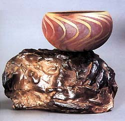
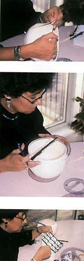
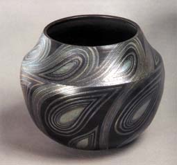
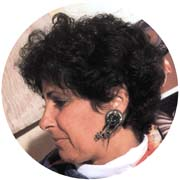

| Carol Rossman Precision Raku
Article by Jonathan Smith
Originally published in Ceramics
Technical. Reprinted by permission.
'It
is the pot that tells me what I want to do' states Carol Rossman
when asked for the origins of her complex burnished and glazed raku
work. Rossman's reputation is founded on the accuracy of her geometry-based
patterns and the control of a superb range of colour in the notoriously
uncontrollable technique of raku. Repeat patterns to paisleys, art
deco to aboriginal, her designs reflect a myriad of sources that
she orchestrates into her own particular voice. When pushed further
about her work she states that she looks for the contrasts to guide
her soft to hard, straight to curved, voluptuous to angled
these things speak to her.
Rossman chooses her plate, bowl and vessel forms with
little or no extraneous detail, from a vocabulary of simple classically
shaped forms she has developed over her 20-year career. The forms
are thrown with a white raku clay body that was developed by fellow
Canadian, Michael Sheba. From the beginning Rossman knows where
the design will be placed inside, outside or on both surfaces. Her
designs require a smooth skin, so she trims her leatherhard pots
and then slightly burnishes them with a rubber or metal rib. When
there is no interior decoration on the piece she will leave throwing
rings on the inside only as a reminder of the artist's touch. A
rich shiny black surface is used to set off her designs and when
the pots are bone dry, half strength terra sigillata is applied
with a large brush. Experimentation was required before the right
thickness was achieved. Burnishing is then applied to the terra
sigillata until the surface feels smooth like satin.
Rossman
finds that burnishing with plastic credit cards or plastic-coated
playing cards producse the best surface results. When completely
dry, the pots are bisqued fired to cone 08. She studies the bisqued
pot and decides intuitively whether the design will be freeform
or repeat pattern, and how many repeats are necessary. A design
can be lightly sketched in on a section of the white bisque ware
with an ordinary pencil, while corrections are made with a technical
eraser. For ease of correction Rossman suggests not to erase along
the line but across the pencil line to prevent rubbing the graphite
into the surface. When the basic repeat of the pattern is satisfactory,
a protractor is used to divide the pot into equally spaced sections.
For designs on the interior, sections are marked from the centre
to the rim; for the exterior, the rim to the base. To ensure accuracy
in the repeats it is necessary to draw straight lines over the curving
surfaces of the pots. Rossman attaches ordinary masking tape and
then draws her guidelines with a lead pencil.
All areas that will not be glazed on the pots must
now be masked with tape. Rossman uses black Chartpak Crepe tape
to create her designs. She settled on this product because the tape
stretches making it easy to follow the complex curves that so often
make up her designs. This product also comes in a wide variety of
widths so that several line widths, from fine to thick can be used
in any one design. At first only one section of the design is taped.
As the tape is black, this allows Rossman an opportunity to see
the effect of the design on the form, the tape representing the
areas of smoke and the white, the glazed portion.
Any improvements in the balance of pattern can be
easily corrected at this time. With the design sections already
established, the remaining pattern repeats are taped. While the
repeats look exact, Rossman eyeballs the design while she tapes
each section. This gives a subtle variation to the piece and keeps
the design from appearing mechanical. The rim is rarely glazed so
it and the bottom of the pot are the last areas taped. To simplify
the glazing process and to save tape on pieces where there are large
areas of undecorated clay, these areas can be masked with plastic
wrap such as recycled dry cleaning bags. After the final layer of
glaze is applied, all the tape is removed with the aid of dental
tools and tweezers.
Glazing
The process of glazing begins with Rossman studying
the taped piece to see if there are areas on the pot that she wants
to highlight with different glazes or subtle colour changes created
by oxides. Rossman has reduced her stable of glazes (having used
more than 30 different glazes over the years) down to 12 which are
used in combination with seven oxides. Her experimentation over
the years has given her the knowledge of glaze combinations so that,
in the end, a pot may have up to six layers of glaze and oxides
to create the rainbow effects that identify her work. On the bare
pot, areas are picked out for highlighting by painting sometimes
up to three layers of glaze or oxide with the appropriate sized
brushes. These highlighted areas may be random but more often they
are chosen to create a repeat pattern to give movement to the design.
After the final choice of how many areas are accentuated in different
glazes, the pots are air brushed with an even coat of glaze. Then
this coat may have other layers of glaze sprayed on to give the
surface even more movement with lively colour changes on the surface.
For a subtle effect used occasionally, the entire piece is lightly
sprayed with glaze while slowly rotating it on a banding wheel;
this lowers the contrast between areas. All work must now be dried
for at least two days before firing.
Glaze Firing
One rule of firing that Rossman insists upon is the
need to raku with at least another person or two. While safety is
the main concern here, the social aspects of the exchange of ideas
are a welcome change from the solitary aspect of the studio. The
firings are done on an as-needed schedule though Rossman says that
warm dry overcast days are her favourite. She favours a brick raku
kiln and at home she uses a standard top-hat brick and metal drum
kiln fired with propane to cone 08. While firing, time is spent
preparing the reduction bins to her specific requirements.
Post Firing
In
order to maximise reduction, the post-firing bins are filled with
sawdust to minimise the air space between the pot and the combustible
materials. The sawdust is levelled and then covered with one sheet
of newspaper to keep the sawdust from flying around during reduction.
On the centre of the newspaper sheet Rossman puts a piece of wood
at least as large as the pot bottom. Any wood will do and Rossman
often collects scraps from building sites. She uses a wood base
instead of a firebrick for the reduction it creates on the bottom
of the piece. Finally, the bin is lined with rolled newspaper wrapped
around the interior circumference. Great care is taken so that when
the fired pot is placed in the bin it sits only on the block of
wood and no newspaper comes in contact with the surface. Through
trial and error Rossman prefers using the Sunday New York Times
though she is not certain whether it is the paper or the ink that
makes the difference.
The fired pot is carefully lowered into the bin with
tongs on to the wooden block. The lid is not placed on the drum
until big healthy flames lick the pot.
The piece remains covered until the smoke has almost dissipated.
At this point Rossman lifts one side the lid slightly to create
uneven oxidation on the piece. This 'burping' of the bin is one
more chance to add to the variations of the surface so that when
one looks at the piece, every side of the pot reveals a different
aspect. The pot now is left to sit in the closed bin for at least
20 to 30 minutes until she can pick it up with gloves. The piece
is then left to cool to ambient temperature and shelved for two
to three days. Pieces are then examined for soot markings. Many
of Rossman's surfaces are dry or matt glazes, so the soot is removed
gently with a toothbrush. On the blackened inside of the pot, soot
can be easily removed with a dry cloth. After a final examination
of the surfaces, Rossman buffs the pot with a silicon-impregnated
sponge used to shine shoes. This final buffing brings the smoked
terra sigillata up to a rich black that sets off the multi-coloured
veils of colour.
Jonathan Smith, MFA (Chicago), is
the Curator of the Collection at the Burlington Art Centre, Burlington,
Ontario, Canada, home of the largest permanent collection of contemporary
Canadian ceramics. Caption title page: Carol Rossman in her studio.
Photographs: Michael Dismatsek and Jonathan Smith.
Originally published in Ceramics
Technical. Reprinted by permission.
More Articles
|